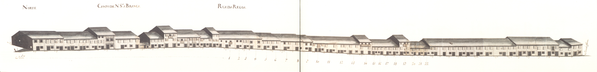

43 Campo de Nossa Senhora a Branca. Rua da Régua. Rua Nova da Seara
Devido ao desnível do terreno onde se implantava, estava dividido em duas ruas, separadas
por um murete no centro.
Aberta talvez sobre o traçado da via romana que levava a Chaves ,
esta rua, na Idade Média, fazia a ligação entre a cidade e a igreja de
S. Victor .Chamava-se então rua da Corredoura .
D.Luís de Sousa (1677-1690) reedificador
da igreja de S.Victor que fica na extremidade Este desta
artéria, mandou alargá-la, criando então 2 artérias paralelas e desniveladas: a da Régua
no lado Norte e a rua Nova da Seara , no Sul.
Em 1750 tinha um carácter ainda de via de penetração; por ela entrava na cidade
todo o tráfego oriundo da zona do Barroso e do Bom Jesus .
Os seus edifícios eram quase todos do tipo com a porta de entrada ladeada de uma janela, com
dois pisos e janelas bracarenses no primeiro andar.
Os alçados que aqui se apresentam têm três tipos diferentes: os da parte do campo de
Nossa Senhora a Branca são casas simples, de dois pisos, do tipo de porta ladeada por janela
no rés-do-chão e janelas bracarenses no andar nobre, e três vãos. Os da rua da Régua ,
são do mesmo tipo mas têm apenas 2 vãos o que imediatamente lhe dá outro carácter. Os da rua
Nova da Seara são muito mais pobres, predominando os de um só piso (75%), muitos deles também
do tipo de porta ladeada por janela (79%), e com as aberturas vazadas, que seriam tapadas por portas
de madeira; a metade Oeste estava totalmente ocupada por campos.
Esta artéria mantém algumas das raras casas deste tipo que ainda hoje se conservam em Braga .
Das 56 casas do lado Norte (correspondendo ao Campo de Nossa Senhora a Branca e
rua da Régua ) e 24 do Sul ( rua Nova da Seara ) eram prazos do
Cabido 22 e 24, respectivamente.
As ruas da Régua e Nova da Seara formam actualmente a rua de S. Victor .
Esta designação remonta já a 1865 .
Visão original

Visão atual


Casas
1 Norte Sebastião Luís de Faria, enfiteuta principal do prazo dos campos detrás de Nossa Senhora a Branca e das Ranhas, sito na freguesia de S.Vitor Os herdeiros de Cosme Francisco , besteiro, casado com Isabel Pereira , pagam 540 reis e 1 galinha ao enfiteuta do prazo dos campos detrás de N. Sra. a Branca e das Ranhas , situado na freguesia de S. Vitor . Confronta, do poente, com casa foreira ao Hospital de S.Marcos .
2 e 3 Norte Sebastião Luís de Faria, enfiteuta principal do prazo dos campos detrás de Nossa Senhora a Branca e das Ranhas, sito na freguesia de S.Vitor Os herdeiros de Francisco Gomes , alfaiate, casado com Margarida Francisca , pagam 660 reis e 1 galinha ao enfiteuta do prazo dos campos detrás de N. Sra. a Branca e das Ranhas .
4 Norte Sebastião Luís de Faria, enfiteuta principal do prazo dos campos detrás de Nossa Senhora a Branca e das Ranhas, sito na freguesia de S.Vitor Os herdeiros de Maria de Oliveira , viúva, pagam 710 reis e 1 galinha ao enfiteuta do prazo dos campos detrás de N. Sra. a Branca e das Ranhas .
5 e 6 Norte Sebastião Luís de Faria, enfiteuta principal do prazo dos campos detrás de Nossa Senhora a Branca e das Ranhas, sito na freguesia de S.Vitor Os herdeiros de Tomé de Araújo , carpinteiro, casado com Maria Antónia , pagam 1050 reis e 1 galinha ao enfiteuta do prazo dos campos detrás de N. Sra. a Branca e das Ranhas .
7, 8 e 9 Norte Sebastião Luís de Faria, enfiteuta principal do prazo dos campos detrás de Nossa Senhora a Branca e das Ranhas, sito na freguesia de S.Vitor Os herdeiros de Domingos Fernandes , tanoeiro, casado com Isabel Gonçalves , pagam 1400 reis e 2 galinhas ao enfiteuta do prazo dos campos detrás de N. Sra. a Branca e das Ranhas .
11 Norte Sebastião Luís de Faria, enfiteuta principal do prazo dos campos detrás de Nossa Senhora a Branca e das Ranhas, sito na freguesia de S.Vitor Os herdeiros de Maria de Sousa , casada com Tomé da Silva , da freguesia de Barroso , pagam 750 reis e 1 galinha ao enfiteuta do prazo dos campos detrás de N. Sra. a Branca e das Ranhas . Esteve unida ao n.º10 entre os anos de 1612 a 1671 .
12 Norte Sebastião Luís de Faria, enfiteuta principal do prazo dos campos detrás de Nossa Senhora a Branca e das Ranhas, sito na freguesia de S.Vitor Os herdeiros de Inácia do Vale , filha natural de Isabel Dias , pagam 720 reis e 1 galinha ao enfiteuta do prazo dos campos detrás de N. Sra. a Branca e das Ranhas . Esteve unida ao n.º10 entre os anos de 1612 a 1679 .
13 Norte Sebastião Luís de Faria, enfiteuta principal do prazo dos campos detrás de Nossa Senhora a Branca e das Ranhas, sito na freguesia de S.Vitor Os herdeiros de Domingos Fernandes , ferreiro, casado com Isabel Antónia , pagam foro ao enfiteuta do prazo dos campos detrás de N. Sra. a Branca e das Ranhas .
14 Norte Sebastião Luís de Faria, enfiteuta principal do prazo dos campos detrás de Nossa Senhora a Branca e das Ranhas, sito na freguesia de S.Vitor Os herdeiros de António Carvalho , sombreiro, casado com Maria Martins , pagam 700 reis e 1 galinha ao enfiteuta do prazo dos campos detrás de N. Sra. a Branca e das Ranhas .
15 Norte Sebastião Luís de Faria, enfiteuta principal do prazo dos campos detrás de Nossa Senhora a Branca e das Ranhas, sito na freguesia de S.Vitor Os herdeiros de Francisco Martins , sombreiro, casado com Gregória Ferreira , pagam 770 reis ao enfiteuta do prazo dos campos detrás de N. Sra. a Branca e das Ranhas .
16 Norte Sebastião Luís de Faria, enfiteuta principal do prazo dos campos detrás de Nossa Senhora a Branca e das Ranhas, sito na freguesia de S.Vitor Os herdeiros do Padre António de Oliveira , pagam 755 reis ao enfiteuta do prazo dos campos detrás de N. Sra. a Branca e das Ranhas .
17 Norte Sebastião Luís de Faria, enfiteuta principal do prazo dos campos detrás de Nossa Senhora a Branca e das Ranhas, sito na freguesia de S.Vitor Os herdeiros de Maria Gonçalves , viúva de Francisco Gonçalves , pagam 700 reis e 1 galinha ao enfiteuta do prazo dos campos detrás de N. Sra. a Branca e das Ranhas . Foi subenfiteut, juntamente com os n.º18, 19, 20, 21 e 22, no ano de 1612 .
18 a 22 Norte Sebastião Luís de Faria, enfiteuta principal do prazo dos campos detrás de Nossa Senhora a Branca e das Ranhas, sito na freguesia de S.Vitor Os subenfiteutas pagam ao enfiteuta do prazo dos campos detrás de N. Sra. a Branca e das Ranhas , pelo n.º18, 100 reis; pelo n.º19, 600 reis e 1 galinha; pelos n.º20 e 21 (unidos), 700 reis e 1 galinha; e pelo n.º22, 700 reis e 1 galinha. A casa n.º22 confronta, do nascente, com casa foeira à Mitra.
1 e 2 Sul As filhas do Dr. António Carneiro Tinoco Pagam 1800 reis ao n.º24.
3 Sul As filhas do Dr. António Carneiro Tinoco Manuel Teixeira , sombreireiro, casado com Teresa Maria , paga 1200 reis ao n.º24.
4 Sul As filhas do Dr. António Carneiro Tinoco Senhorinha Lopes , solteira, e seu filho João Marcos , da freguesia de S. Mamede d'Este , pagam 1200 reis ao n.º24.
5 Sul As filhas do Dr. António Carneiro Tinoco Bento de Macedo , sombreireiro, casado com Quitéria Francisca , paga 1200 reis ao n.º24.
6 Sul As filhas do Dr. António Carneiro Tinoco João Franscisco de Oliveira , alfaiate, casado com Mariana Antónia , paga 1200 reis ao n.º24.
7 Sul As filhas do Dr. António Carneiro Tinoco Carlos Pereira , sombreireiro, casado com Mariana Francisca , paga 1200 reis ao n.º24.
8 Sul As filhas do Dr. António Carneiro Tinoco António de Araújo , serralheiro, casado com Josefa Teresa , paga 1200 reis ao n.º24.
9 Sul As filhas do Dr. António Carneiro Tinoco Manuel Marques , sombreireiro, casado com Antónia Francisca , paga 1200 reis ao n.º24.
10 e 11 Sul As filhas do Dr. António Carneiro Tinoco José de Oliveira , carpinteiro, casado com Maria Francisca , paga 1800 reis ao n.º24.
12 Sul As filhas do Dr. António Carneiro Tinoco Manuel Dias , serralheiro, casado com Maria Francisca , paga 1200 reis ao n.º24.
13 Sul As filhas do Dr. António Carneiro Tinoco António de Araújo , sombreireiro, casado com Isabel Maria , paga 1200 reis ao n.º24.
14 Sul As filhas do Dr. António Carneiro Tinoco Francisco Silva , carpinteiro, casado com Isabel Gomes , paga 1200 reis ao n.º24.
15 Sul As filhas do Dr. António Carneiro Tinoco Custódio Francisco , pedreiro, casado com Ana Francisca , paga 1200 reis ao n.º24.
16 Sul As filhas do Dr. António Carneiro Tinoco Silvestre de Oliveira , jornaleiro, casado com Inês Dantas , paga 1200 reis ao n.º24.
17 Sul As filhas do Dr. António Carneiro Tinoco Ana Ferreira , viúva de Domingos Marques , alfaiate, paga 1200 reis ao n.º24.
18 Sul As filhas do Dr. António Carneiro Tinoco Manuel da Costa , sombreireiro, casado com Marta Ferreira , paga 1200 reis ao n.º24.
19 Sul As filhas do Dr. António Carneiro Tinoco Diogo da Costa , sombreireiro, casado com Ana Lopes , paga 1200 reis ao n.º24.
20 Sul As filhas do Dr. António Carneiro Tinoco Custódio Pereira , pedreiro, casado com Ursula Francisca , paga 1200 reis ao n.º24.
21 Sul As filhas do Dr. António Carneiro Tinoco Geraldo de Matos , sombreireiro, casado com Domingas Francisca , paga 1200 reis ao n.º24.
22 Sul As filhas do Dr. António Carneiro Tinoco Garcia Correia , carpinteiro, casado com Francisca de Barros , paga 1200 reis ao n.º24.
23 Sul As filhas do Dr. António Carneiro Tinoco Domingos de Barros , alfaiate, viúvo, paga 1200 reis ao n.º24. Confronta, do poente, com propriedade do prazo principal.
24 Sul As filhas do Dr. António Carneiro Tinoco 100 reis, 6 alqueires de trigo, 6 de pão meado e 2 galinhas E cabeça de Prazo «Casal de Entre os Matos», da freguesia de S. Vitor . O emprazamento mais antigo que se conehce data de 1483 e foi feito a favor de Martim Álvares , ouvires, da cidade de Braga . Seguem-se os emprazamentos dos anos de 1550 e 1579 . Pertence a este prazo os n.º1 a 23 da rua Nova da Seara .